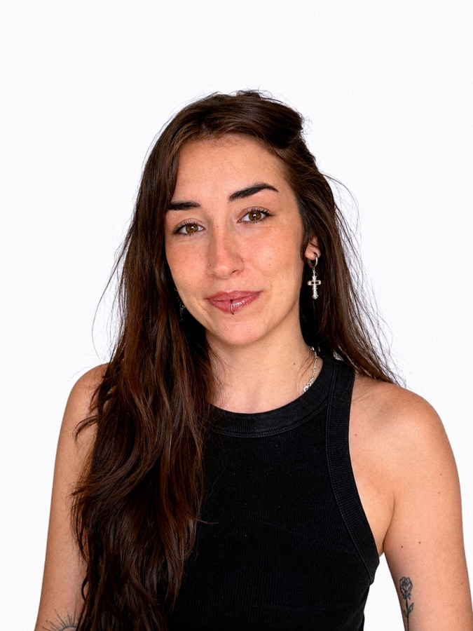

2022—2026Grado Universitario en Diseño Gráfico y Multimedia
·UDIT, Madrid

Soy Ayla, diseñadora gráfica y multimedia graduada en UDIT (Madrid). Me defino como una persona creativa y curiosa: diseño, ilustro y animo, y tengo muchas ganas de seguir aprendiendo y crecer profesionalmente.